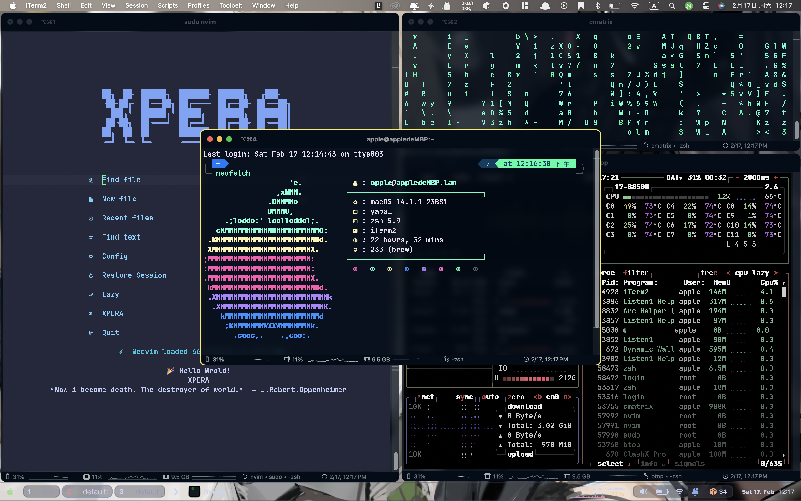

yabai
First Post:
Last Update:
Word Count:
Read Time:
Page View: loading...
Last Update:
Word Count:
1.1k
Read Time:
4 min
Page View: loading...
yabai — skhd — spacebar

官网
教程
用Mac不用它，你的Mac白买了 —— 平铺式窗口管理器yabai
【Yabai/窗口管理/桌面美化】这个真的是Mac系统的桌面？Mac下面最好看的窗口管理工具Yabai
关闭SIP
安装
安装需要brew(mac不自带)没有安装的可以在 brew官网 上安装
1 | |
安装好后yabai需要运行 sudo yaban —load-sa
执行 shasum -a 256 $(which yabai) 来获取hash和yabai安装位置
编辑/etc/sudoers文件，在末尾加上：
1 | |
然后把~/.config/yabai/yabairc文件添加两行：
1 | |
运行
1 | |
重启
1 | |
配置文件

first使用这个需要删除limelight(已弃用)
键绑定（用的是second）
| Alt + h | 切换窗口注视（左） |
|---|---|
| Alt + j | 切换窗口注视（下） |
| Alt + k | 切换窗口注视（上） |
| Alt + l | 切换窗口注视（右） |
| Shift + Alt + h | 移动同桌面的窗口（左） |
| Shift + Alt + j | 移动同桌面的窗口（下） |
| Shift + Alt + k | 移动同桌面的窗口（上） |
| Shift + Alt + l | 移动同桌面的窗口（右） |
| Shift + Command + h | 更改窗口大小（左） |
| Shift + Command + j | 更改窗口大小（下） |
| Shift + Command + k | 更改窗口大小（上） |
| Shift + Command + l | 更改窗口大小（右） |
| Shift + Alt + c | 窗口浮动 |
| 左Ctrl + Alt + 0 | 重置窗口大小 |
| 左Ctrl + Alt + g | 窗口间隙 |
| Alt + r | 逆时针旋转窗口 |
| Shift + Alt + r | 顺时针旋转窗口 |
| Shift + Alt + x | 同桌面左右翻转窗口 |
| Shift + Alt + y | 同桌面上下反转窗口 |
| Shift + 左Ctrl + Alt + h | 显示下一个窗口插入位置（左） |
| Shift + 左Ctrl + Alt + j | 显示下一个窗口插入位置（下） |
| Shift + 左Ctrl + Alt + k | 显示下一个窗口插入位置（上） |
| Shift + 左Ctrl + Alt + l | 显示下一个窗口插入位置（右） |
| Shift + Alt + Space | 同桌面的窗口全部浮动 |
| Shift + Alt + Command + r | 重启yabai |
| Alt + f | 窗口铺满屏幕 |
| Shift + ALt + f | 窗口全屏 |
| Alt + t | 更改窗口分割类型 |
| Shift + Alt + d | 未知 |
| Shift + Alt +w | 未知 |
| Shift + Alt + a | 减少窗口大小（横向） |
| Shift + Alt + s | 减少窗口大小（竖向） |
| Command + Alt + x | 切换桌面（最近） |
| Command + Alt + z | 切换桌面（上） |
| Command + Alt + c | 切换桌面（下） |
| Alt + 1 | 切换桌面（1） |
| Alt + 2 | 切换桌面（2） |
| Alt + 3 | 切换桌面（3） |
| Alt + 4 | 切换桌面（4） |
| Alt + 5 | 切换桌面（5） |
| Alt + 6 | 切换桌面（6） |
| Alt + 7 | 切换桌面（7） |
| Alt + 8 | 切换桌面（8） |
| Alt + 9 | 切换桌面（9） |
| Alt + 0 | 切换桌面（10） |
| Ctrl + n | 融合桌面（上） |
| Ctrl + m | 融合桌面（下） |
| Shift + Command + Alt + w | 删除空白桌面 |
| Ctrl + Shift + 1 | 将当前窗口融合到桌面（1） |
| Ctrl + Shift + 2 | 将当前窗口融合到桌面（2） |
| Ctrl + Shift + 3 | 将当前窗口融合到桌面（3） |
| Ctrl + Shift + 4 | 将当前窗口融合到桌面（4） |
| Ctrl + Shift + 5 | 将当前窗口融合到桌面（5） |
| Ctrl + Shift + 6 | 将当前窗口融合到桌面（6） |
| Ctrl + Shift + 7 | 将当前窗口融合到桌面（7） |
| Ctrl + Shift + 8 | 将当前窗口融合到桌面（8） |
| Ctrl + Shift + 9 | 将当前窗口融合到桌面（9） |
| Ctrl + Shift + 0 | 将当前窗口融合到桌面（10） |
| Shift + Command + m | 将窗口移动到桌面（最后） |
| Shift + Command + b | 将窗口移动到桌面（上一个） |
| Shift + Command + n | 将窗口移动到桌面（下一个） |
| Shift + Command + 1 | 将窗口移动到桌面（1） |
| Shift + Command + 2 | 将窗口移动到桌面（2） |
| Shift + Command + 3 | 将窗口移动到桌面（3） |
| Shift + Command + 4 | 将窗口移动到桌面（4） |
| Shift + Command + 5 | 将窗口移动到桌面（5） |
| Shift + Command + 6 | 将窗口移动到桌面（6） |
| Alt + Ctrl + f | 未知 |
| Alt + Ctrl + b | 未知 |